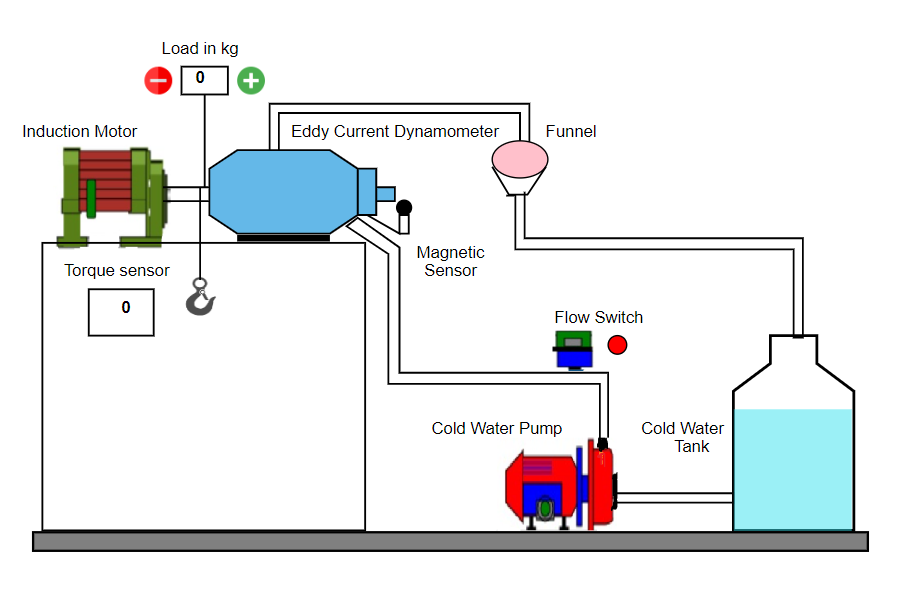

COEP TECHNOLOGICAL UNIVERSITY PUNE
Download Result
Configuration
Procedure
Simulation Demo
Message Box
×
...
Message Box
×
...
DEMO
Your browser does not support the video tag.
CONFIGURATION OF SHAFT TORQUE
SHAFT TORQUE CHARACTERIZATION DIAGRAM


 COEP TECHNOLOGICAL UNIVERSITY PUNE
COEP TECHNOLOGICAL UNIVERSITY PUNE
COEP TECHNOLOGICAL UNIVERSITY PUNE
COEP TECHNOLOGICAL UNIVERSITY PUNE